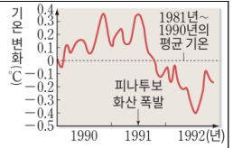
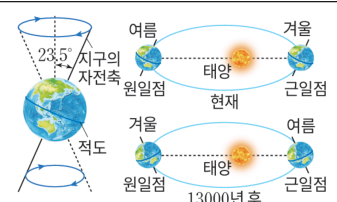
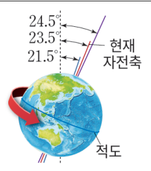
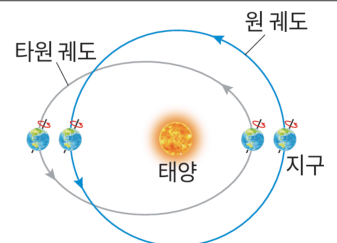
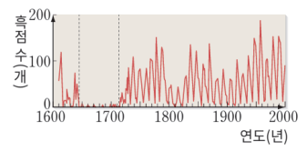
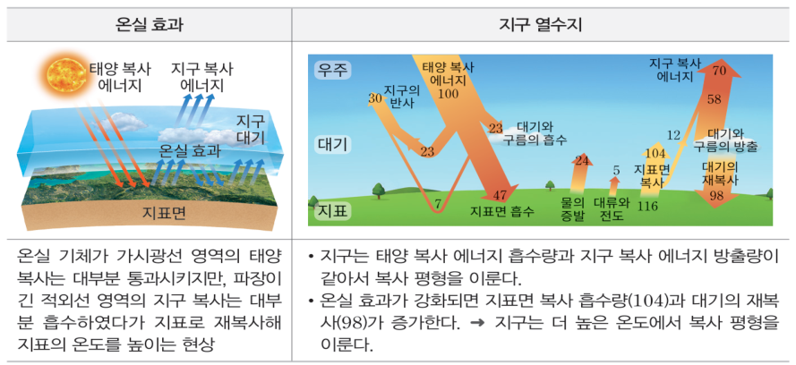
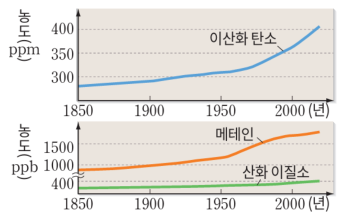
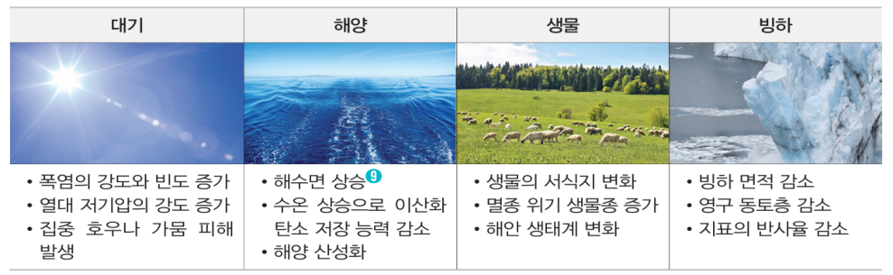

학습 목표 (Learning Objectives)
- ✓기후 변화의 원인을 자연적 요인(지구 내적·외적 요인)과 인위적 요인으로 구분하여 설명할 수 있다.
- ✓지구 자전축과 공전 궤도 변화에 따른 기온 연교차 변화를 추론하고 기후 변화 해결 방안을 탐색할 수 있다.
핵심 개념 체크리스트
학습을 마친 개념은 직접 체크해보세요!
2026 사대부고 고2 지구과학 자체 교재 원문 기반
동기 유발 · 생각해보기
수업 시작 전 핵심 질문
Q. 인도양의 아름다운 섬나라 몰디브는 해수면 상승으로 인해 바다 속으로 가라앉을 위기에 처해 있다. 만약 지금과 같은 속도로 지구 평균 기온이 상승한다면 우리나라와 우리 동네의 계절과 생태계는 어떻게 변할까?

💡 먼저 스스로 이유를 추론해 본 뒤 버튼을 눌러 확인해보세요!
✨ 과학적 해설 및 모범 답안
해수의 열팽창과 대륙 빙하의 융해로 해수면이 상승하여 해안 저지대가 침수되고, 한반도는 아열대 기후화가 진행되어 겨울이 짧아지고 여름이 길어지며 폭염·열대야·초강력 태풍 등 극단적 기상 현상의 빈도가 급증하게 됩니다.
수치 시뮬레이션
🌍 밀란코비치 주기 3요소에 따른 지구 기온 연교차 변화 시뮬레이터
세차 운동(자전축 방향), 자전축 기울기(21.5°~24.5°), 공전 궤도 이심률을 변경해보며 북반구/남반구의 계절별 일사량과 연교차 변화를 수치로 확인하세요.
수치 시뮬레이션
천문학적 기후 변동 모델
밀란코비치 주기 & 기온 연교차 인터랙티브 모델
① 세차 운동 (자전축 경사 방향)
현재 상태 (근일점=겨울)
② 자전축 기울기
23.5° (현재)
21.5° (최소)23.5° (현재)24.5° (최대)
③ 공전 궤도 이심률 (e)
0.017 (현재)
0.005 (원에 가까움)0.017 (현재)0.060 (타원형)
연교차 시뮬레이션 결과 지표 (현재 기준 비교)
북반구 기온 연교차
기준 (±0.0 ℃)
여름 보통 / 겨울 보통
남반구 기온 연교차
기준 (±0.0 ℃)
여름 보통 / 겨울 보통
💡 과학적 분석 결론:
현재 북반구는 근일점에서 겨울이어서 연교차가 비교적 온화합니다. 자전축 기울기가 커지면 남·북반구 모두 연교차가 증가합니다.
핵심 개념 1
1. 기후 변화의 자연적 요인 (지구 내적 요인)
(1) 화산 활동, 지표면 상태 변화, 수륙 분포 변화
- •화산 폭발: 대규모 화산 폭발 시 분출된 화산재와 에어로졸이 성층권에 도달하여 오랫동안 머물면서 태양 복사 에너지를 산란·반사(지구의 반사율 증가)시키므로 수년간 지구의 평균 기온이 하강한다.
- •지표면의 상태(반사율·알베도) 변화:
▸ 빙하 면적 감소: 반사율이 매우 높은 빙하(눈/얼음)가 녹아 반사율이 낮은 지표나 바다가 드러나면 지표면 반사율이 감소하여 태양 복사 에너지 흡수량이 늘어나 기온이 더욱 상승한다(양의 피드백).
▸ 산림 파괴 및 사막화: 숲을 벌채하거나 사막화가 진행되면 지표면 반사율이 증가한다. - •대륙과 해양의 수륙 분포 변화: 판의 이동으로 대륙과 해양의 배치가 달라지면 비열과 반사율이 변하고 표층·심층 해류의 경로가 바뀌어 장기적인 기후가 변한다.

" class="max-h-72 w-auto object-contain rounded-lg group-hover:scale-[1.02] transition duration-300 cursor-zoom-in" onclick="openLightbox(this.src, '교재 그림: <대규모 화산 분출에 의한 성층권 에어로졸 형성과 기온 하강>')" loading="lazy" />
핵심 개념 2
2. 기후 변화의 자연적 요인 (지구 외적 요인 - 천문학적 요인)
(1) ⭐ 밀란코비치 주기와 태양 활동 변화 (수능 최고 빈출!)
- •현재 지구의 상태 (기준점 암기 필수!): 현재 지구는 근일점(태양에서 가장 가까울 때)에서 북반구 겨울(남반구 여름)이고, 원일점(태양에서 가장 멀 때)에서 북반구 여름(남반구 겨울)이다. 따라서 현재 북반구는 남반구보다 기온의 연교차가 비교적 작다.
- •다른 조건이 일정할 때 각 요인의 변화가 북반구와 남반구의 기온 연교차에 미치는 영향을 정확히 구분해야 한다.
| 외적 요인 | 변화 주기 및 범위 | 기온의 연교차 변화 (현재 기준 비교) |
|---|---|---|
| ① 세차 운동 (자전축 경사 방향 회전) | 약 26,000년 주기로 시계 방향 회전 | • 현재로부터 13,000년 후에는 자전축 경사 방향이 반대가 됨 • 근일점 = 북반구 여름, 원일점 = 북반구 겨울이 되므로 ➔ 북반구 연교차 증가(↑), 남반구 연교차 감소(↓) |
| ② 자전축 기울기 변화 (공전 궤도면 수직선 대비) | 약 41,000년 주기로 $21.5^\circ\sim 24.5^\circ$ 변화 (현재 $23.5^\circ$) | • 자전축 기울기가 커지면 여름철 남중 고도는 더 높아지고 겨울철 남중 고도는 더 낮아짐 ➔ 북반구와 남반구 모두 기온의 연교차 증가(↑) |
| ③ 공전 궤도 이심률 변화 (타원의 납작한 정도) | 약 10만 년 주기로 원 궤도 $\leftrightarrow$ 타원 궤도 변화 | • 이심률이 현재보다 커지면 근일점 거리는 가까워지고 원일점 거리는 멀어짐 • 현재 북반구는 근일점이 겨울, 원일점이 여름이므로 ➔ 북반구 연교차 감소(↓), 남반구 연교차 증가(↑) |
| ④ 태양 활동(흑점 수) 변화 | 약 11년 주기 | • 태양 활동이 활발한 흑점 극대기에는 지구에 도달하는 태양 복사 에너지양이 증가하여 지구 기온 상승 |

" class="max-h-72 w-auto object-contain rounded-lg group-hover:scale-[1.02] transition duration-300 cursor-zoom-in" onclick="openLightbox(this.src, '교재 그림: <지구의 세차 운동 (주기 약 26,000년)>')" loading="lazy" />
" class="max-h-72 w-auto object-contain rounded-lg group-hover:scale-[1.02] transition duration-300 cursor-zoom-in" onclick="openLightbox(this.src, '교재 그림: <지구 자전축 경사각 변화 (21.5° ~ 24.5°)>')" loading="lazy" />
" class="max-h-72 w-auto object-contain rounded-lg group-hover:scale-[1.02] transition duration-300 cursor-zoom-in" onclick="openLightbox(this.src, '교재 그림: <지구 공전 궤도 이심률 변화 (주기 약 10만 년)>')" loading="lazy" />
" class="max-h-72 w-auto object-contain rounded-lg group-hover:scale-[1.02] transition duration-300 cursor-zoom-in" onclick="openLightbox(this.src, '교재 그림: <태양 흑점 수 변화 주기>')" loading="lazy" />
핵심 개념 3
3. 기후 변화의 인위적 요인과 지구의 열수지
(1) 온실 효과 강화와 지구 온난화
- •온실 기체 배출: 화석 연료 사용 증가로 대기 중 이산화 탄소($\text{CO}_2$), 메테인($\text{CH}_4$) 등 온실 기체 농도가 급증하여, 지표가 방출하는 적외선(지구 복사 에너지)을 대기가 흡수했다가 지표로 재복사하는 양이 늘어나 지구 온난화를 유발한다.
- •에어로졸 배출: 인간 활동으로 배출된 에어로졸은 태양 복사 에너지를 산란·반사하고 구름의 응결핵 역할을 하여 구름 양을 늘림으로써 기온을 낮추는 역할을 하기도 한다.
- •기후 변화의 영향: 해수면 상승(해수의 열팽창 + 대륙 빙하 융해), 기상 이변 증가, 생태계 서식지 변화 및 생물 다양성 감소

" class="max-h-72 w-auto object-contain rounded-lg group-hover:scale-[1.02] transition duration-300 cursor-zoom-in" onclick="openLightbox(this.src, '교재 그림: <지구의 열수지와 복사 평형 모식도>')" loading="lazy" />
" class="max-h-72 w-auto object-contain rounded-lg group-hover:scale-[1.02] transition duration-300 cursor-zoom-in" onclick="openLightbox(this.src, '교재 그림: <대기 중 이산화 탄소 농도 변화>')" loading="lazy" />
" class="max-h-72 w-auto object-contain rounded-lg group-hover:scale-[1.02] transition duration-300 cursor-zoom-in" onclick="openLightbox(this.src, '교재 그림: <지구 온난화에 따른 환경 변화>')" loading="lazy" />
Interactive Checkpoints
클릭하면 교재 빈칸 정답과 해설이 나타납니다
단원 개념 적용하기 & 확인 문제
Q1
교재 p.27 핵심 체크: 다른 요인의 변화가 없을 때, 현재보다 '지구 자전축 기울기가 커지고' 동시에 '공전 궤도 이심률이 작아지면' 우리나라(북반구 중위도)의 기온 연교차는 어떻게 변하는가?
모범 답안 및 해설
자전축 기울기가 커지면 북반구 연교차가 증가하고, 공전 궤도 이심률이 작아지면(원 궤도에 가까워지면) 현재 원일점(여름)은 가까워지고 근일점(겨울)은 멀어져 북반구 연교차가 역시 증가합니다. 따라서 두 요인 모두 우리나라의 기온 연교차를 더욱 크게 만듭니다.
Q2
교재 p.28 확인: 지구 온난화로 인해 해수면이 상승하는 가장 주요한 두 가지 물리적 원인은 무엇인가?
모범 답안 및 해설
첫째, 수온 상승에 따른 해수의 열팽창과 둘째, 그린란드 및 남극 대륙 등 육지(대륙) 빙하의 융해로 인한 해수 유입입니다. (바다에 떠 있는 북극 해빙이 녹는 것은 해수면 상승에 거의 영향을 주지 않습니다.)